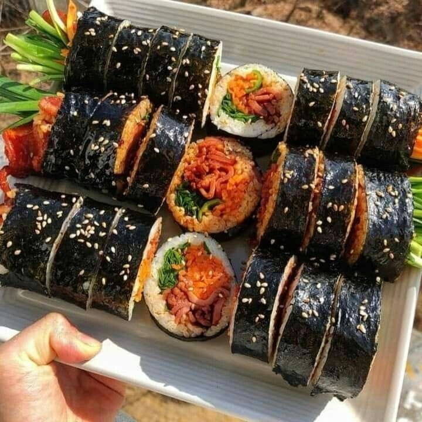

Ingredients:
(serves 2-3 : 5 rolls)- 5 sheets of gim (seaweed paper), roasted slightly (sometimes called “nori” from Japanese)
- 4 cups cooked rice (the recipe is here, but make with 2 cups of short grain rice instead of 1 cup)
- ½ pound beef skirt steak (or tenderloin, or ground beef)
- 1 large carrot, cut into matchsticks (about 1½ cup)
- 5 strips of yellow pickled radish (use pre-cut danmuji or cut into 8 inch long strips)
- 8 to 10 ounces spinach (1 small bunch), blanched, rinsed in cold water, and strained
- 3 eggs
- 3 garlic cloves
- 2 teaspoons soy sauce
- 1 tablespoon plus 1 teaspoon brown (or white) sugar
- 1½ teaspoon kosher salt
- 2½ tablespoons toasted sesame oil
- vegetable oil
Directions
Rice: Place freshly made rice in a large, shallow bowl. Gently mix in ½ teaspoon kosher salt and 2 teaspoons toasted sesame oil over top with a rice scoop or a wooden spoon. Let it cool down enough so it’s no longer steaming. Cover and set aside.
Spinach: gimbap spinach Combine the blanched spinach, 2 minced garlic cloves, ½ teaspoon kosher salt, and 2 teaspoons toasted sesame oil in a bowl. Mix well by hand and put it on a large platter with the sliced yellow pickled radish. Carrots: Combine the carrot matchsticks with ¼ teaspoon kosher salt. Mix well and let it sweat for 5 to 10 minutes. Heat a pan and add a few drops vegetable oil. Squeeze out excess water from the carrot, then saute for about 1 minute. Put it on the platter next to the spinach. gimbap carrot.
Steaks: Trim the fat from the skirt steaks and slice into ¼ inch wide, 3 to 5 inch strips. Put the strips into a bowl. Add 2 teaspoons soy sauce, 1 minced garlic clove, ¼ teaspoon ground black pepper,1 tablespoon plus 1 teaspoon brown (or white) sugar, and 2 teaspoons toasted sesame oil. gimbap seasoned beef Mix well by hand. Set aside, and let them marinate while we do the egg strips.
Eggs: Crack 3 eggs in a bowl and add ¼ teaspoon kosher salt. Beat it with fork and remove the stringy chalaza. Drizzle a few drops of oil on a heated 10 to 12 inch non-stick pan. Wipe off the excess with a paper towel so only a thin sheen of oil remains. Turn down the heat to low and pour the egg mixture into the pan. Spread it into a large circle so it fills the pan. gimbap egg filling When the bottom of the egg is cooked, flip it over with a spatula. Remove from the heat and let it cook slowly in the hot pan for about 5 minutes, with the ultimate goal of keeping the egg as yellow as possible, and not brown. Cut it into ½ inch wide strips. Put it next to the spinach on the platter.
Finish steaks: Heat up a pan over medium high heat and cook the marinated beef, stirring it with a wooden spoon until well cooked. beef filling for gimbap.
Set aside.Let’s roll gimbap!
- Place a sheet of gim on a bamboo mat with the shiny side down. Evenly spread about ¾ cup of cooked rice over top of it, leaving about 2 inches uncovered on one side of the gim.
- Place beef, carrot, yellow pickled radish strip, a few egg strips, and spinach in the center of the rice.
- Use both hands to roll the mat (along with gim and rice) over the fillings, so one edge of the rice and gim reaches the opposite edge. This centers the fillings in the roll, so they’ll be nicely in the middle when you slice it.
- Grab the mat with both hands and and press it tightly as you continue rolling the gimbap. Push out the mat as you roll, so it doesn’t get wrapped in the gimbap.
- Remove the roll from the mat at the end and set the finished roll aside with the seam down, to seal it nicely.
- Repeat 4 more times with the remaining ingredients.
- Put some toasted sesame oil on the finshed rolls and sprinkle some sesame seeds over top. Cut each roll into ¼ inch bite size pieces with a sharp knife, occasionally wiping it with a wet paper towel or cloth to clean the starch off and to ease cutting. Gimbap rolls Put it on a plate and serve immediately or pack it in a lunchbox.
